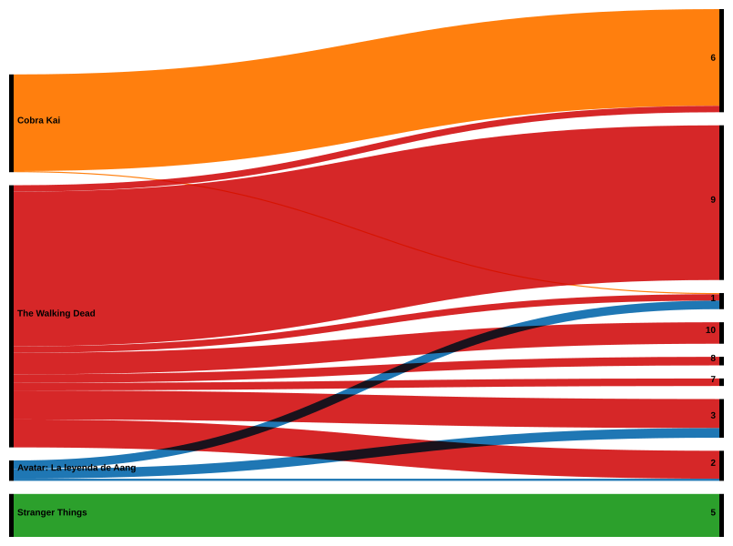

¿Cómo fue mi Historial de Consumo de Netflix?

El dataset fue sacado de la plataforma Netflix con el objetivo de ver que estuve consumiendo últimamente y que contenido es el que más consumo en mi tiempo libre. A partir del dataset y de una limpieza y filtrado para ver de ellas cuales eran Series y cuales Peliculas. Me terminé quedando con las Series ya que me permitian un mayor nivel de análisis frente a las Películas. Además de ver el desarrollo de mis visualizaciones y en que Temporadas fueron.


A partir del análisis con las visualizaciones de mi consumo de Series en Netflix pude observar que en diciembre del 2023 fue cuando mas actividad tuve, consumiendo en gran parte The Walking Dead las temporadas iniciales y finales. Por otro lado estuve viendo también la última temporada de Stranger Things en finales de 2025 y volví a ver entre Febrero y Marzo de 2024 las 3 temporadas de Avatar. Otras series que tuvieron fuerte participación fueron Cobra Kai entre finales de 2024 y principios de 2025. Luego presencié capitulos aislados de otras series como Casados con Hijos, Bojack Horseman o Black Mirror.